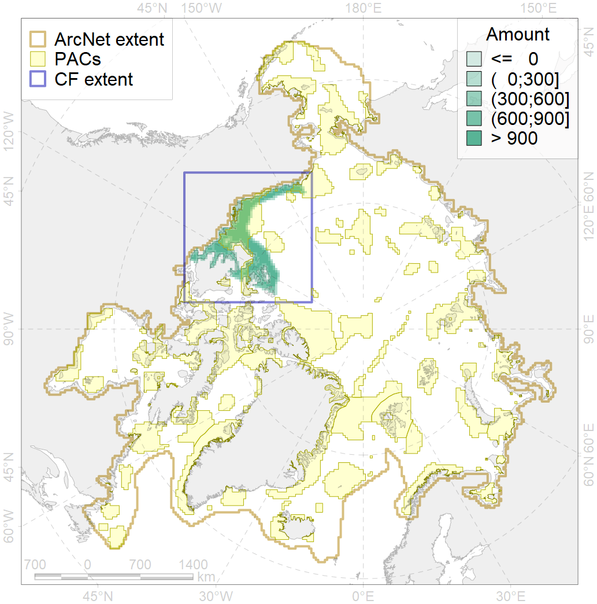
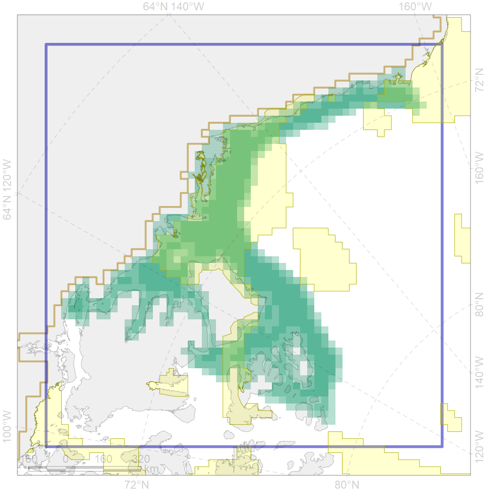

2005

| CF code | 2005 |
| CF name | Bearded seal whelping areas in the Beaufort Sea |
| Time Period | Varies by dataset |
| Source(s) | NOAA, 2002; NOAA, 1988; surrogate data; bathymetry from http://www.naturalearthdata.com/downloads/10m-physical-vectors/ |
| Seasonality | March-June |
| Depth Horizon | 0-200 m |
| Methodology | Data compilation, expert input |
| Use Restrictions | Open source |
| Author Name | Irina Trukhanova |
| Notes | |
| Scenario’s Target | 0.24 |
| Target Achievement | 0.412 (Scenario: 171.7%) |
| PAC | Share of the Total Amount within the PAC | Share of the Target Achievement for the ArcNet | PAC’s Contribution to the Target Achievement |
|---|---|---|---|
| 59 | 0.0%0.0% | 0.1%0.1% | 0.0%0.0% |
| 60 | 3.0%3.5% | 8.9%9.5% | 5.2%5.5% |
| 61 | 0.2% | 0.7% | 0.4% |
| 62 | 33.4%34.1% | 131.2%132.5% | 76.4%77.1% |
| 63 | 3.2%3.2% | 8.6%8.7% | 5.0%5.1% |
| inner | 39.8%41.0% | 149.5%151.5% | 87.0%88.2% |
| outer | 60.2%63.3% | 22.2%33.0% | 13.0%19.2% |
| † supplement values are for area consistence whereas principal values are for Accenter compatible gridded stats |